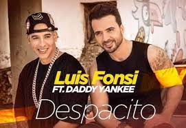

Dünyanın en büyük video paylaşım platformu YouTube, bu yıl 15'inci yılını kutluyor. Video paylaşımları için böyle bir platform kurma fikrinin arkasında ise bir şarkıcının başına gelen talihsiz bir olay yatıyor.Videoların paylaşımı için bir platform kurulması fikrine ilham veren olay, 2004 yılında ABD Ulusal Amerikan Futbolu Ligi'nin finalinin devre arasında şarkıcı Justin Timberlake ile birlikte bir mini konser veren Janet Jackson'ın yaşadığı kaza sebepoldu. O dönem 29 yaşında olan Chad Hurley, 28 yaşındaki Steven Cehn ve 25 yaşındaki Jawed Karim, PayPal'da çalışan, teknolojiye merakla üç arkadaştı. Bir akşam birlikte yemek yerken Jackson'ın başına geleni tartışmaya başladılar ve "viral" video kavramının henüz doğmadığı o dönemde büyük tartışma yaratan ya da merak uyandıran bir görüntüye ulaşmanın ne kadar zor olduğunu dile getirdiler.
İlk YouTube videosu ise sitenin ortak kurucularından Jawed Karim'in San Diego Hayvanat Bahçesi'nde çekip paylaştığı Me at the zoo isimli içerikti. Video 24 Nisan 2005'te yüklendi. Karim, kendi yüklediği bu 19 saniyelik videoda San Diego Hayvanat Bahçesi'ne yaptığı ziyareti anlatıyordu.
Video için tıklayınızYouTube'a Türkiye'den erişim, bugüne kadar mahkeme kararlarıyla 5 kez engellendi. Engellemelerin ilki 6 Mart 2007'de, ikincisi ise 16 Ocak 2008'de gerçekleşti. T.C. Sivas 2.Sulh Ceza Mahkemesi 17 Ocak 2008 tarihli kararıyla YouTube'a 3. erişim engelini koydu. Mayıs 2008'de YouTube'a erişim, Ankara 1. Sulh Ceza Mahkemesi tarafından engellendi. Haziran 2010'da, YouTube'a getirilen yasak DNS yasağından, IP yasağına çevrildi. Böylece YouTube'a erişim tam anlamıyla engellenmiş oldu. 30 Ekim 2010 Cumartesi günü, saat 16.30 itibarıyla, aynı mahkeme tarafından engel kaldırıldı. 2 Kasım 2010 Salı günü ise mahkeme kararıyla Deniz Baykal videoları kaldırılmadığı sürece yeniden yasaklandı.
17 Haziran 2016’da dünya çapındaki çocuklara teşvik edici ve eğlenceli öğrenme deneyimleri sağlamak için yaratıcı, animasyonlu içerik geliştiren Güney Koreli eğitim markası Pinkfong, “Baby Shark Dance” adlı videosunu yayınladı. Video, 11 Şubat 2021 tarihinde tüm zamanların en çok izlenen YouTube videosu oldu. “Baby Shark Dance” güncel olarak 9 milyar izlenmeye sahip.
Video için tıklayınızPorto Rikolu şarkıcı, söz yazarı ve oyuncu Luis Fonsi ile Porto Rikolu rapçi Daddy Yankee’nin yer aldığı ve 2017 yılının dünya çapındaki en hit şarkısı “Despacito”nun video klibi, bin 186 gün boyunca YouTube’da en çok izlenen video unvanını elinde tuttu. Ocak 2017’de YouTube’a yüklenen video, sadece 97 günde bir milyardan fazla izlenmeye ulaştı. Despacito, güncel olarak 7,4 milyardan fazla izlenmeye sahip.
 Video için tıklayınızTüm zamanların en çok izlenen beş YouTube videosu arasına girmeyi başaran çocuklara yönelik ilk video “Johny Johny Yes Papa.” Yaramaz bir bebek ve babası hakkındaki bu kısa ve hareketli şarkı, 2016 yılında yayınlandı. Şu an güncel izlenme sayısı ise 5,6 milyarı aşıyor. Romanyalı LooLoo Kids tarafından paylaşılan video, çeşitli sosyal medya platformlarında da viral olmuştu.
Video için tıklayınızDünyaca ünlü İngiliz şarkıcı ve söz yazarı Ed Sheeran’ın “Shape of You” şarkısının video klibi, 2017 yılında YouTube’a yüklendiğinden beri toplamda 5,4 milyarı aşan bir izlenme sayısına ulaştı. Shape of You, bir milyar görüntülemeye ulaşan en hızlı üçüncü video iken, 2 milyar ve 3 milyar görüntülemeye ulaşan en hızlı ikinci video unvanlarını da elinde tutuyor.
 Video için tıklayınız
Video için tıklayınız
2005’te kurulan ve Kasım 2006’da Google tarafından satın alınan video içerik platformu YouTube’un şimdiye kadar en çok izlenen beşinci videosu ise Wiz Khalifa ve Charlie Puth’ın “See You Again” adlı şarkılarının video klibi. “Hızlı ve Öfkeli 7” filminin de müziği olan parça, Nisan 2015’te yayınlanmasının ardından günümüze dek 5 milyar izlenmeyi aştı. See You Again, 10 Temmuz-4 Ağustos 2017 tarihleri arasında, Gangnam Style’ı tahtından indirerek YouTube’da en çok izlenen video olarak kaldı. Ayrıca 26 Ağustos 2016 ile 25 Temmuz 2017 tarihleri arasında YouTube’un en çok beğenilen videosu unvanını elinde tuttu.
 Video için tıklayın
Video için tıklayın